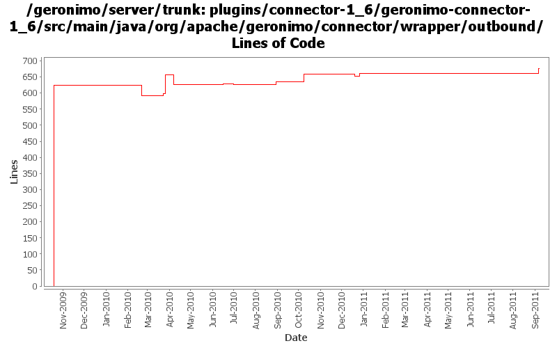

[root]/plugins/connector-1_6/geronimo-connector-1_6/src/main/java/org/apache/geronimo/connector/wrapper/outbound
 connectiontracking
(1 files, 57 lines)
connectiontracking
(1 files, 57 lines)
 security
(2 files, 190 lines)
security
(2 files, 190 lines)
 transactionlog
(2 files, 254 lines)
transactionlog
(2 files, 254 lines)

| Author | Changes | Lines of Code | Lines per Change |
|---|---|---|---|
| Totals | 36 (100.0%) | 900 (100.0%) | 25.0 |
| djencks | 21 (58.3%) | 743 (82.6%) | 35.3 |
| gawor | 5 (13.9%) | 81 (9.0%) | 16.2 |
| xuhaihong | 6 (16.7%) | 31 (3.4%) | 5.1 |
| rickmcguire | 2 (5.6%) | 26 (2.9%) | 13.0 |
| violalu | 2 (5.6%) | 19 (2.1%) | 9.5 |
GERONIMO-6146 fix classcast exception when creating oracle rac
1 lines of code changed in 1 file:
GERONIMO-6146 fix classcast exception when creating oracle rac datasource
18 lines of code changed in 1 file:
GERONIMO-5741 java.lang.ClassCastException at JCAConnectionFactoryImpl.getManagedConnectionFactoryInstance() line: 64 (Patch from Shenhao Fang)
10 lines of code changed in 2 files:
No function change, just remove many unused import declarations
21 lines of code changed in 4 files:
GERONIMO-5230 Add Bean Validation Support to the connector 1.6 implementation.
Changes to Geronimo base.
26 lines of code changed in 2 files:
GERONIMO-434 for ee jndi go back to getting the connection factory each time from the connection manager since osgi jndi caches the connection factory for us
21 lines of code changed in 2 files:
GERONIMO-5422 warn on certain ra.xml errors
0 lines of code changed in 1 file:
GERONIMO-5380 Allow exposing gbeans as osgi services (or service factories). Replace the specialized code in connector with this new generic code. This is not serialziation compatible with old GBeanInfo and GBeanData
20 lines of code changed in 3 files:
GERONIMO-5113: Mostly complete support for @DataSourceDefinition(s) annotations
12 lines of code changed in 2 files:
GERONIMO-5170: Register connection factories into service registry. Also, allow connection factories to specify custom jndi name for jndi lookups via osgi:service/ scheme
69 lines of code changed in 3 files:
GERONIMO-434, GERONIMO-4360 runtime TransactionSupport support, which requires reversing the connection manager to mcf dependency. This allows extracting the connection factor from the jsr-77 connection factory object
47 lines of code changed in 4 files:
GERONIMO-5152 mostly, use annotations for gbeans
31 lines of code changed in 5 files:
move packages to avoid split-packagle problems with tx components
624 lines of code changed in 6 files: